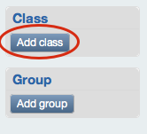
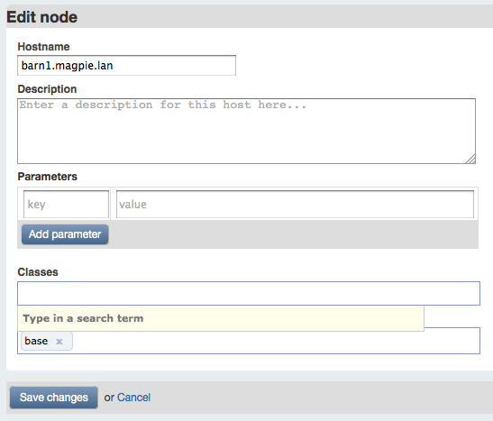
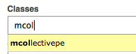
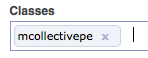

Navigation
- Introduction
- Overview
- Installing
- Upgrading
- Using Puppet Enterprise
- The Accounts Module
- Puppet Compliance
- Known Issues
- Troubleshooting
- Answer File Reference
Using Puppet Enterprise
Puppet Enterprise is Puppet
If you’re an experienced Puppet or MCollective user, Puppet Enterprise will work almost exactly as you expect.
Users
Puppet Enterprise creates and uses the following users for services and interaction:
mco— The Mcollective client user, which exists on the puppet master server. To issue MCollective commands, you must be acting as themcouser usingsudo -H -u mco <command>,sudo -H -s -u mco, orsu mco—rootcannot send MCollective messages.pe-puppet— The Puppet user, which runs the puppet agent service (pe-puppet).pe-apache— The PE web server user, which runs the copy of Apache (pe-httpd) that manages puppet master and Puppet Dashboard.pe-activemq— The ActiveMQ user, which exists on the puppet master server and runs the message bus used by MCollective.
Directories and Locations
All of Puppet Enterprise’s components are installed in the /opt/puppet directory.
- The Puppet and MCollective library files are installed in
/opt/puppet/lib/ruby/site_ruby/1.8. - Executables are installed in
/opt/puppet/binand/opt/puppet/sbin. - Puppet Dashboard is installed in
/opt/puppet/share/puppet-dashboard. - The bundled Puppet modules are installed in
/opt/puppet/share/puppet/modules, which is included in Puppet’smodulepath.
Similarly, PE’s configuration files are kept in the /etc/puppetlabs directory.
- Puppet’s
confdiris/etc/puppetlabs/puppet, and its user modules directory is/etc/puppetlabs/puppet/modules. - PE’s license key should be placed at
/etc/puppetlabs/license.key. - MCollective’s config files are in
/etc/puppetlabs/mcollective. - Puppet Dashboard’s settings.yml and database.yml files are in
/etc/puppetlabs/puppet-dashboard.
Services
Puppet Enterprise uses the following services, which can be managed with your OS’s system tools:
pe-puppet— The puppet agent daemon. Runs on every agent node.pe-mcollective— The MCollective server. Runs on agent nodes where MCollective has been enabled.pe-httpd— Apache with Passenger, which manages instances of puppet master and Puppet Dashboard and responds to HTTP requests. Runs on servers with the puppet master and/or Puppet Dashboard roles.pe-puppet-dashboard-workers— Puppet Dashboard’s background worker manager. Runs on servers with the Puppet Dashboard role.pe-activemq— The ActiveMQ message server, which the MCollective servers on agent nodes communicate with. Runs on servers with the puppet master role.
Reading Man Pages
For this version of PE, you should access the Puppet man pages using the pe-man tool, which accepts the complete name of a puppet command:
# pe-man puppet agent
Using Puppet and MCollective
Teaching the use of Puppet and MCollective is currently outside the scope of this document. We recommend the following resources:
- For new users learning Puppet from scratch, we recommend the Learning Puppet series, which explains the theory of Puppet and guides you through its basic use with practical exercises.
- For advanced users looking to jump in feet-first, we recommend reading the language guide, the guide to module layout, and the core types cheat sheet (PDF link).
- To learn how to use MCollective, we recommend starting with the MCollective documentation.
- To learn how to use Puppet Dashboard, please see the Puppet Dashboard 1.2 Manual.
Enabling MCollective
Puppet Enterprise uses a Puppet class called mcollectivepe to manage MCollective. To enable MCollective on an agent node, you must apply this class to the node.
If you are managing node classes in Puppet Dashboard, you should first add the mcollectivepe class to its list of known Puppet classes…

…then add that class to each node or group where you want MCollective enabled:

 
Maintaining and Tweaking Puppet Enterprise
Manually Installing the Ruby Development Libraries
If you find that you need the Ruby development libraries but skipped them during installation, you can install the packages manually rather than re-running the installer. The method for this will depend on your operating system’s package management tools, but in each case, you must first navigate in your shell to the directory containing the packages for your operating system and architecture, which will be inside the packages subdirectory of the Puppet Enterprise distribution tarball. (If you deleted the installation files, you will need to re-download them.)
For systems using apt and dpkg (Ubuntu and Debian), run the following commands:
dpkg -i *ruby*dev*
apt-get install --fix-broken
For systems using rpm and yum (Red Hat Enterprise Linux, CentOS, and Oracle Enterprise Linux), run the following commands:
yum localinstall --nogpgcheck *ruby*dev*
Enabling Reporting on Non-PE Agent Nodes
If you are integrating puppet agent nodes running a non-supported operating system into your Puppet Enterprise site, you’ll need to enable reporting on these nodes in order for them to appear in Puppet Dashboard. In each such agent node’s puppet.conf file, ensure that the [agent] or [puppetd] section contains report = true.
Maintaining Puppet Dashboard in Puppet Enterprise
Puppet Dashboard can require periodic maintenance; most notably, old reports should be cleaned occasionally. All of these tasks are done via rake tasks, and in Puppet Enterprise, they must be done with PE’s copy of rake.
Before running any of the rake tasks described in the maintenance chapter of the Dashboard manual, you should navigate to /opt/puppet/share/puppet-dashboard in your shell and alter your $PATH to ensure that the proper copy of rake will be called:
# cd /opt/puppet/share/puppet-dashboard
# export $PATH=/opt/puppet/bin:/opt/puppet/sbin:$PATH